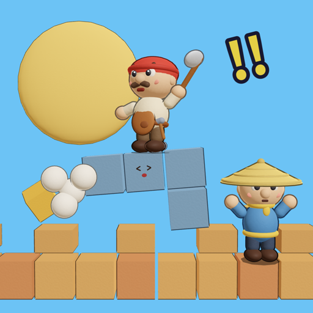

Crazy Stack: Clay Builders
A claymation building comedy for iPhone, iPhone Duo and iPad. Ride falling stones, chop and stomp them into place, bonk mischievous bosses — and keep the wall below the storm clouds.
- Ride the stones: drive, flip, stomp, fling and chop
- The porter plugs the holes all by himself
- 5 worlds with different rules and a boss each
- Stones with personality, pigeons, goats and kites — every run is different
- Co-op on one device · Endless mode · Daily challenge · 14 languages
- One-time purchase. No ads, no in-app purchases, plays offline
疯狂堆堆乐：黏土工匠
黏土定格动画风的盖墙喜剧，为 iPhone、iPhone Duo 和 iPad 打造。骑着掉落的石头开、砍、踹，敲捣蛋鬼的脑袋——别让城墙碰到乌云。一次买断，无广告、无内购，可离线游玩。